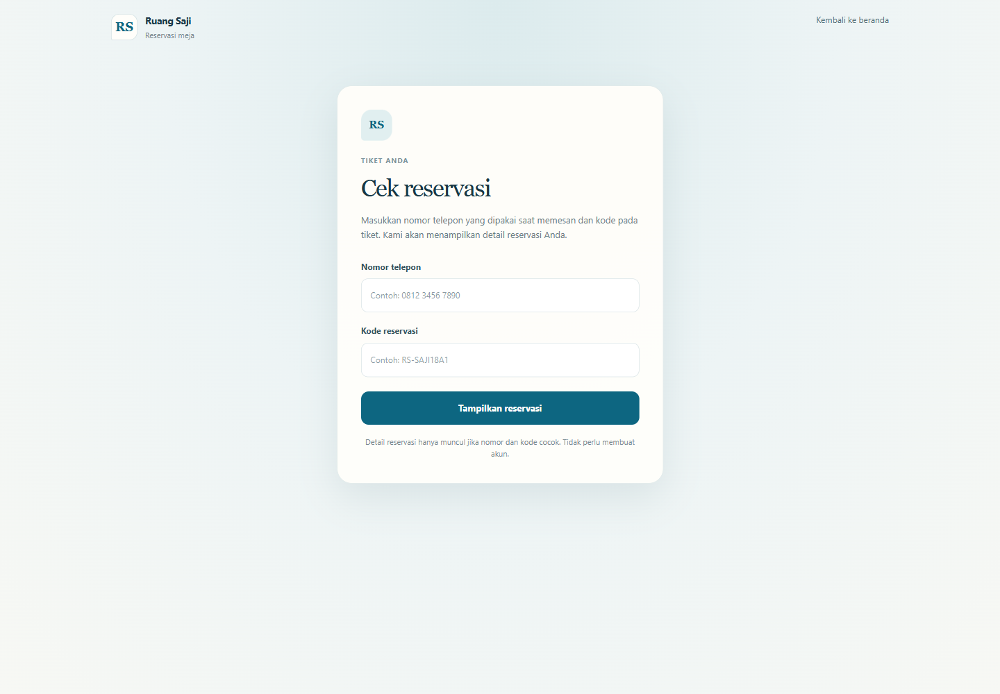
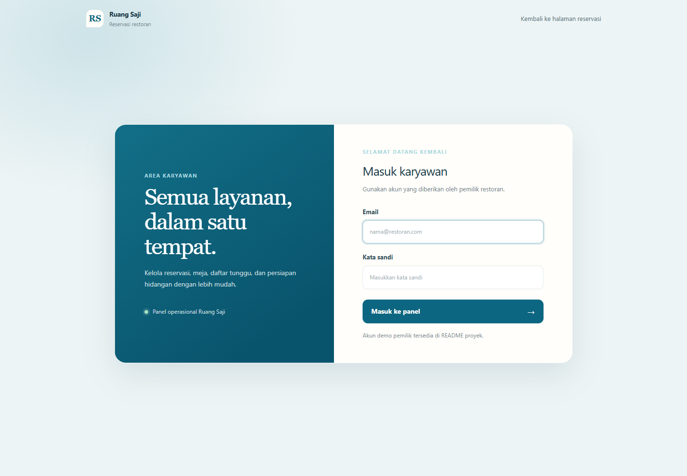

Ruang Saji
A responsive table reservation app for local cafes and restaurants. Guests can check availability, reserve a table, optionally choose meals ahead of time, and retrieve their booking without creating an account. Staff can coordinate arrivals, tables, waitlists, and kitchen preparation.



Public portfolio demo. Use fictional contact details. Payments are simulated and no real reservation or payment is processed.
Key Features
Table availability
Guests select party size, date, and arrival time. The app checks capacity and prevents overlapping reservations.
Reservation ticket
Each completed booking receives a confirmation code guests can show to staff or use to look up the reservation later.
Optional meal pre-order
Guests can skip the menu or choose dishes ahead. Kitchen preparation follows the serving time and check-in flow.
Staff operations
Staff can check in guests, manage waitlists, update delays, and mark tables available only after cleaning is confirmed.
Restaurant settings
Owners can configure opening hours, table capacity, estimated visit duration, cleaning buffer, and deposit policy.
Responsive experience
The booking flow and staff entry points are designed for phones as well as desktop screens.
Technical Highlights
- Reservation conflicts: availability is checked against table capacity and overlapping reservation windows.
- Guest lookup: reservations can be retrieved with the booking phone number and confirmation code, without a customer account.
- Table lifecycle: estimated duration helps plan capacity; a table becomes available only after the guest leaves and staff confirms cleaning.
- Kitchen timing: pre-ordered dishes are held until the serving schedule or guest check-in so food is not prepared too early.
- Deployment: Docker image deployed to Hostless with PostgreSQL and environment-based secrets.